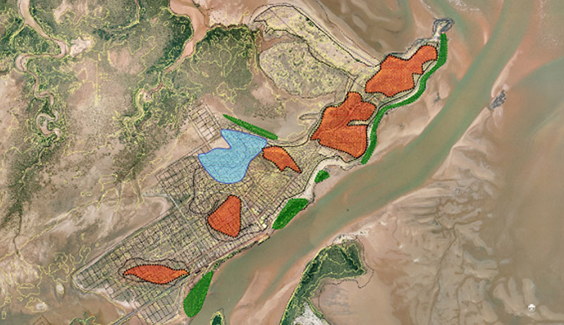

Solutions
Helen Grzyb and Associates works with government and private sector organisations to achieve the maximum value possible from managing in an environment of change.
We are perfectly positioned to help your organisation develop and implement the strategies required to operate more effectively as customers and stakeholders become more demanding of results. We have expertise in undertaking:

Program reviews
Helen can conduct independent reviews of your programs with diverse frameworks and standards.
Learn moreStrategic plans
We develop strategic and business plans for not for profit organisations seeking to better position themselves for the future.
Learn moreStakeholder engagement
Dr Helen Grzyb has substantial expertise as a professional presenter and is able to chunk down complex concepts into bite sized chunks, an important factor in sharing new information for serious consideration by stakeholders.
Learn more
Constitution review
Helen can review your non-profit's constitution so it retains currency in a changing environment.
Learn moreSocial and economic studies
Helen has conducted analysis in the areas of tourism, economic and social impacts, timber plantations, chamber of commerce/local economic development, catchment management and conservation, main roads and infrastructure, residential aged care services, and services for communities including for children, people with a disability, and seniors.
Learn moreReporting
We work with a range of individuals and businesses to provide a complete suite of research and analysis services. These include statistical analysts, economists, electronic survey experts, and others.
Learn more
Executive coaching
As executive coach, Helen has a very effective approach in gaining people’s trust, teasing out barriers to adoption of change and new approaches, and is experienced in coaching for individuals in both government and not for profit organisations.
Learn moreStrategic plans
Helen Grzyb and Associates promotes excellence through the application of effective internal and external plans and policies in an increasingly competitive environment.
We develop strategic and business plans for not for profit organisations seeking to better position themselves for the future. As well as marketing and communication plans, we review organisational Constitutions so that not for profit organisations retain currency in a changing environment.
Dr Helen Grzyb has substantial expertise as a professional presenter and is able to chunk down complex concepts into bite sized chunks, an important factor in sharing new information for serious consideration by stakeholders.
Executive coaching
As executive coach, Helen has a very effective approach in gaining people’s trust, teasing out barriers to adoption of change and new approaches, and is experienced in coaching for individuals in both government and not for profit organisations.
Reporting
Research and analysis:
We work with a range of individuals and businesses to provide a complete suite of research and analysis services. These include statistical analysts, economists, electronic survey experts, and others.
We have substantial experience in drafting reports and papers, many of which have been in the public arena for consultation or comment.
Dr Helen Grzyb has substantial expertise as a professional presenter and is able to chunk down complex concepts into bite sized chunks, an important factor in sharing new information for serious consideration by stakeholders.
We have developed or contributed to a wide range of reports for clients, many of which are publicly available: Examples are:
- Workforce Development Report for CommunityWest Inc (2011).
- Consultation and strategy development with the business and community sectors as part of the Partnerships WA project in conjunction with Lotterywest (2003).
- Consultation, communications and strategy development relating to the development of the Fremantle Prison Heritage Precinct master plan (with Palassis Architects for the Department of Housing and Works). Nine workshops including discussions with the Nyoongar and Italian communities in Fremantle (2003).
- Research and consultation for the Fremantle Chamber of Commerce marketing strategy (2003).
- Consultation and strategy development relating to a business attraction study for the West End of Fremantle (City of Fremantle, 2002). Research and consultation relating to the social and economic impacts of Notre Dame on the West End of Fremantle (2002).
- Research, community consultation and strategy development relating to a policy and purchasing framework for therapy and professional services for school aged children with a disability for the Disability Services Commission included five workshops (2001).
Since 1997, we have advised Federal, State and Local government agencies. Reports compiled as part of these consultancies include:
- WALIS - Response to the State Sustainability Strategy, 2003.
- Department of Housing and Works – Fremantle Prison Heritage Precinct Master Plan, 2003.
- Department of Justice – Evaluation of the Aboriginal Employment Strategy, 2002.
- Disability Services Commission – Development of a Policy and Purchasing Framework for the provision of therapy and professional services to school aged children with a disability, 2001.
- City of Cockburn – Our children our future – future directions for children’s services, a ten year plan, 2001.
- Department of Health – Evaluation of the Aboriginal Employment Strategy, 2000.
- Assessment of staff acceptance of the Department for Environmental Protection productivity model, 1997.
- Conservation Council of WA strategic plan 2005 – 2010.
- Kids are Kids Inc – strategic plan 2005 – 2010.
- The Aged Persons Support Service – strategic plan 2005 – 2010.
- Perth Area Consultative Committee – employee manual, contacts, operational audit, 2004.
- Department of Justice – Aboriginal Employment Plan, 2003.
- Department of Justice – Evaluation of the Aboriginal Employment Strategy, 2002.
- Various state government agencies – recruitment and selection reports, 1998 – 2003.
- City of Cockburn – Our children our future – future directions for children’s services, a ten year plan, 2001.
- WRC – Marketing and communication plans for South West Catchment Councils, 2000 – 2001.
- Department of Health – Evaluation of the Aboriginal Employment Strategy, 2000.
- DEWR – Great Southern Regional Wood Processing Industry Capability Statement 2000.
- AFFA – Western Australian Regional Plantation Committees – review of role, operations and performance, 1999.
- Review of the Swan Catchment Centre and Avon Catchment Network, 1998.
During her time as a policy maker in the Western Australian state government, Helen produced papers for the State Government including:
- Evaluation of the inaugural Premier’s Awards for Public Sector Management, 1996
- Strategy for the Future Development of the Customer Focus Program, 1997
- Findings of Qualitative Research with a Sample of Key Agency Stakeholders, 1996
- Customer Focus in the Public Sector – Discussion Paper, 1996
- AIH – The Next Step – Commonwealth State Disability Agreement , 1993
- AIH – A Strategy for Government in Promoting Positive Outcomes for People with a Disability, 1992
- WA Treasury – An analysis of Total Quality Management and its relationship with the Australian Public Service Reforms, 1991
- National competition policy reform statements, 1996
- Government Two Year Plan for Women 1996 – 1998, 1996
- Managing Change and Changing the Management of Western Australia ,1995
- King’s Park and Botanic Garden Business Plan, 1995 – 2005
- DOCIT, Performance Evaluation Guidelines, 1989
- WA Government Budget papers (program statements), 1990
- WA Treasury, Managing the Business of Government , 1992
- Helping the Community to Help Itself – the review of non-governmental organisational funding support – summary report (with Louise Jones, Public Service Commission), 1992
- WA Government submission to the Commonwealth Grants Commission, 1992
- AIH Review of Respite Care, 1992
- Commonwealth/State Disability Agreement Working Party Report, 1992
About
Winner of the Australian Institute of Management (WA) award for best masters student and the Bankwest scholarship for Advanced not for profit governance, Dr Grzyb is an accomplished researcher and strategist with over 30 years’ national track record in both government and not-profit sectors.
An accredited policy and research advisor and engagement expert by government agencies in Western Australia, she is a Fellow of the Australian Institute of Company Directors (and a graduate of the Company Director course), of the Australian Institute of Management, and of the Australian Human Resources Institute.
As the founding director of Helen Grzyb and Associates, Helen has assisted local and national organisations in devising answers to complex policy and governance questions in their pursuit of improving outcomes.
She trains and advises executives across private and public sectors on stakeholder engagement, governance and executive coaching. The biggest impact of her work has been successfully achieving stakeholder buy-in in significant projects.
Prior to leading her independent consultancy business, Dr Grzyb was a senior government officer at the centre of the Western Australian government, advising on environmental, aboriginal affairs, disability services together with treasury and public sector management areas.
Helen has lectured extensively on undergraduate, postgraduate and executive courses in Australia, and her expertise has been recognised with invitations to present to senior staff in South East Asia, at national conferences and to national and Western Australian organisations.
A trained facilitator, Helen has been recognised for her ability to fully engage with participants in a creative learning environment.
As chief investigator of government-funded research projects, Dr Grzyb has led multidisciplinary teams in program evaluations, legislative review, policy and purchasing frameworks, strategic and business planning. These projects include the areas of tourism, economic and social impacts, timber plantations, chamber of commerce/local economic development, catchment management and conservation, main roads and infrastructure, residential aged care services, and services for communities including for children, people with a disability, and seniors.
Dr Grzyb has also contributed to multidisciplinary projects in the areas of heritage master planning, infrastructure planning, indigenous employment and health, secondary education institutions, and local government planning.
As a result of her decades of expertise and practice Helen is seen as an expert in community based organisations and their activities, in stakeholder engagement and governance processes and practice.
A strong advocate for education and economic empowerment, Dr Grzyb dedicates her time and expertise to the cause by mentoring new professionals. She has spoken to graduates about business set up, entrepreneurship, and consultancy practice and served as a mentor for the Australian Human Resources Institute and Curtin’s NEXT STEP mentoring program. She currrently mentors public servants through the Institute of Public Administration Australia (WA).
Her passion in connecting businesses with philanthropic activities has seen her serving on the non-profit boards of incorporated organisations: Advocare, Rosewood Care Group, The Aged Persons Support Service, Disability in the Arts, Disadvantage in the Arts, Australia (WA), Rocky Bay, Eastern Regional Business Enterprise and Arts Centre, Quadriplegic Centre, Meerilinga Incorporated and Presbyterian Ladies’ College.
Helen's substantial expertise in not for profit organisations saw her appointment to the Western Australian Charitable Institutions Advisory Committee, a role she has held for five years. Her interest in vocational education in regional WA has seen her recently appointed to the South REgional TAFE.Helen’s fundamental belief in blending economic and community responses has seen her pro-bono work with professional and business organisations including the City of Subiaco Economic and Sustainable Business committee, the Chamber of Commerce and Industry WA’s Small and Medium Enterprise Council, and the Small Enterprise Association of Australia and New Zealand (WA).
Dr Grzyb is a member of the Australasian Evaluation Society, the Institute of Public Administration Australia, the Infrastructure Sustainability Council of Australia and the Institute of Professional Facilitators.
Her published work includes research papers and reports on evaluation models, stakeholder engagement, small business (rural and metropolitan), community organisations, timber plantation industry, SME corporate responsibility.
Professional affiliations
Dr Helen Grzyb holds the following affiliations:
- Infrastructure Sustainability Professional
- Member of the Institute of Public Participation, Australasia
- Fellow of the Australian Human Resources Institute
- Fellow of the Australian Institute Of Management
- Member of the Institute of Public Administration, Australia
- Fellow of the Australian Institute of Company Directors
- Member of the Australasian Evaluation Society
- Member of the Australian Institute of Professional Facilitators


Previous clients
Since 1997, Helen Grzyb and Associates have worked with an extensive group of clients in government, not for profit and industry sectors.
We currently provide executive coaching and mentoring services to individuals, either on a confidential arrangement or via organisations such as the Institute of Public Administration Australia (WA), Curtin University, the Australian Human Resources Institute. In the past, we provided coaching to executives via the previous panel contract with the WA Department of the Premier and Cabinet.
We have successfully completed diverse research, policy and planning projects for clients such as:
- Aged and Community Services WA
- Aged Care Standards and Accreditation Agency
- ACROD WA (now NDS)
- Advocare Inc
- Australian Public Service Commission
- Baptistcare Inc
- City of Cockburn
- City of Fremantle
- City of Melville
- City of Swan
- City of Swan Aged Care Services Inc
- Clough Projects Pty Ltd
- Commonwealth Department of Health and Family Services
- Communicare Inc
- CommunityWest Inc
- Conservation Council of WA Inc
- Curtin University of Technology – the Curtin Consultancy Service, and the Small Business Unit
- Department of the Attorney General
- Department of Commerce
- Department of Environmental Protection
- Department of Employment, Workplace Relations and Small Business
- Department of Finance, Funding and Contracting Services Unit
- Department of Housing and Works
- Department of Industry and Resources
- Department of Justice
- Office of the Public Advocate,
- Corporate Services,
- Family Court,
- Office of the Chief Justice, and
- Aboriginal Alternative Dispute Resolution Office
- Department of Land Information
- Department of the Premier and Cabinet
- Office of Development Approvals Coordination,
- Workforce Development,
- Public Sector Management, and
- Office of Citizens and Civics
- DADAA (WA) Inc
- Disability Services Commission
- Curriculum Council of Western Australia
- Curtin University
- Graduate School of Business,
- Entrepreneurship Unit,
- Curtin Consultancy Service, and
- Small Business Unit
- Data Analysis Australia
- East Perth Redevelopment Authority
- Economic Consulting Services
- Environs Consulting
- Grower Group Alliance Inc
- General Practitioner Network of WA Inc
- Health Department of W.A.
- IIR Conferences
- Institute of Public Administration Australia (WA) Inc
- LandCorp
- Landgate
- Main Roads WA
- Ministry of Justice
- Ngala Family Resource Centre Inc
- Office of the Chief Justice
- Office of the Public Advocate
- OPTUM Group Pty Ltd
- Palassis Architects
- People with Disabilities (WA) Inc
- People Who Care Inc
- Phoenix International Language Academy
- PPK Environment and Infrastructure
- Police and Citizen's Youth Clubs
- Public Sector Management Program (Federal Government)
- Regional Plantation Committees of WA and Agriculture Forestry and Fisheries Australia
- Rocky Bay Inc
- Small Business Development Corporation
- Social Systems and Evaluation
- Spowers Architects
- St Mary's Anglican Girls' School
- Swan Catchment Council
- The Aged Persons Support Service Inc
- The Aged Care Standards and Accreditation Agency
- The Planning Group
- Timber 2002 and Department of Employment, Workplace Relations and Small Business
- University of Notre Dame Australia
- University of Western Australia
- WA Council of Social Services
- WA Land Information System
- Water and Rivers Commission
- West Coast TAFE
- Yanndina Inc
In 2006, Dr Helen Grzyb was part of the original MRWA Value Assurance Review team which tested the first Value Assurance Review (VAR) of MRWA stakeholder engagement. As a result of this work, Helen is an accredited MRWA VAR Reviewer. Subsequently Helen went on to undertake a further five reviews for MRWA projects:
- Albany Ring Road project
- City East Alliance project
- Gateway Vision project
- Mitchell Freeway Extension project
Helen is very experienced in undertaking independent reviews including with diverse frameworks and standards. She has developed enhancements to increase outcomes from the review process/result including coaching project staff to increase project engagement expertise.
Currently, as a highly experienced VAR reviewer Helen has utilised the MRWA framework and has adapted review techniques to extend and improve the framework to include:
- Real time evaluation
- Independent review statement as part of the project business case
Helen is sought after to share her expertise in organisations such as IAP2 (she is a member) and ISCA (also a member).
Cossack 2006-7 – stakeholder engagement
Project Background
Established in 1863 at the mouth of the Harding River near Roebourne. Cossack was once a thriving community servicing the pastoral and pearling industries.
Originally known as Tien Tsin harbour, the name was changed in 1871 to Cossack in honour of the ship that carried the Western Australian Governor Sir Frederick Weld to the area. Pearl divers from Japan, the Philippines and Malaysia were first attracted to the area in 1866 and by the 1870s more than 80 boats were operating out of the port.
The townsite was officially declared in 1872. Such was its commercial importance that by 1887 a horse drawn tramway connected Cossack port with the township of Roebourne. The town was abandoned after World War II following unsuccessful attempts to resuscitate the local pearling industry.
For decades the heritage buildings deteriorated into ruins until new funding permitted restoration work to be undertaken. This funding was sourced from the Heritage Council and supported by funds from the Shire of Roebourne. Connection to power, water and sewerage has been delayed due to lack of a clear future for the site. Tourist operators had gone out of business in the meantime.
With the pressure for increased housing in Karratha, a project was commissioned by the Department of Housing and Works, the Heritage Council of WA and the Shire of Roebourne.
Project Objective: To develop the best way forward for Cossack including consideration of ways to optimise opportunities for housing.
Goal for Helen Grzyb and Associates:
To engage with the community and with stakeholders for their input into a masterplan.Image from Cossack Master Plan Palassis Architects
Our team members were Dr Grzyb, Shontay Cardew, Mary Power. We identified the key audiences including private landowners; ratepayers (currently partly funding the restoration work), archaeological, heritage, and indigenous groups, as well as federal, state and local governments.
A consultation plan was developed, including six focus groups which were held in Cossack, Roebourne, Karratha, and in Perth.
There was general concurrence about heritage, environmental and climate constraints on increasing buildings at the site.
A draft masterplan was developed and released for comment late in 2006. Further feedback was sought from stakeholders and these comments informed the development of a masterplan which was presented to the Minister for Housing for his consideration.
Fremantle Prison Heritage Precinct is one of the most significant heritage sites in Australia.
The development of the Fremantle Prison Heritage Precinct Master Plan presented many exciting opportunities to create an exceptional and viable experience. The success of the Fremantle Prison as a unique heritage precinct is to a large degree reliant on capturing the attention and imagination of visitors. The opportunity now exist to emphasise its connection with the port and city of Fremantle and to provide economically viable and compatible utilisation of the buildings and spaces which make up the precinct.
The project was to develop a Master Plan which created a vision for the future, firmly anchored in the past, with practical implementation strategies for the present. Palassis Architects were appointed as the project leaders, with international expertise from tourism, heritage,and marketing included in the multi-disciplinary project team.
Our engagement team members Dr Grzyb, Amy Lomas, Mary Power, and John Michael Swinbank, brought collective expertise in managing multiple stakeholders, for example managing situations where stakeholders may have aggressively pursued special interests.
We developed an optimum two stage engagement strategy that involved local and government stakeholders in developing a way forward for the Prison.
The Master Plan was adopted by government and implemented.
Baptistcare 2012
In 2012, Helen Grzyb and Associates were appointed to undertake a review of Baptistcare’s contract with the Town of Brookton for management of the Kalkarni Aged Care facility.
The work involved reviewing documentation including contracts and financial reports, undertaking workshops and meeting with key stakeholders of the residential aged care service as well as the adjacent medical service.
As a result of this work the contract negotiations between the two parties progressed and an updated contract was agreed which recognised the current operating and policy environment for residential aged care in regional Western Australia; the quality requirements for residential aged care services; the differing needs well as the commonalities of interest between Baptistcare and the Town of Brookton.

Gateway source ; https://www.bgeeng.com/sc-traffic-design/40-market-sectors/ms-transport/mst-traffic-design/329-gateway-vision-wa?tmpl=component
News
February 14, 2020
Workshops at As We Are
- We are facilitating strategic plan workshops this coming week for As We Are, a disability group that is part of the Nulson Group.
July 3, 2019
New board role
- Governing Council Member for South Regional TAFE
January 1, 2017
New Panel Contracts
- Approved provider for the Provision of Stakeholder and Community Engagement Services for Main Roads Western Australia
- Approved provider for the supply of policy and research services: Commissioner for Children and Young People.